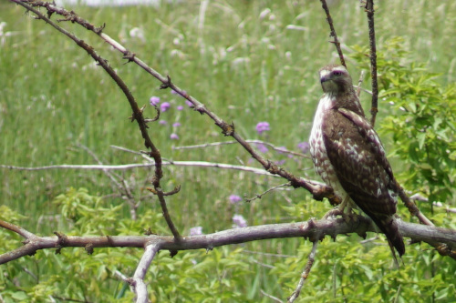
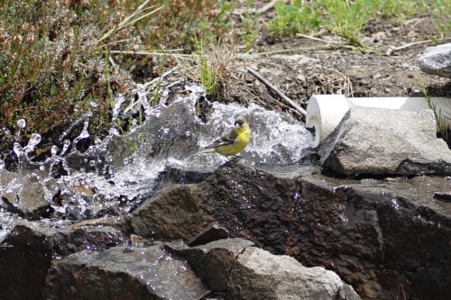
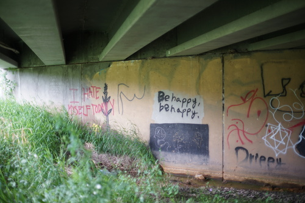
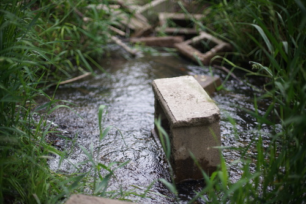
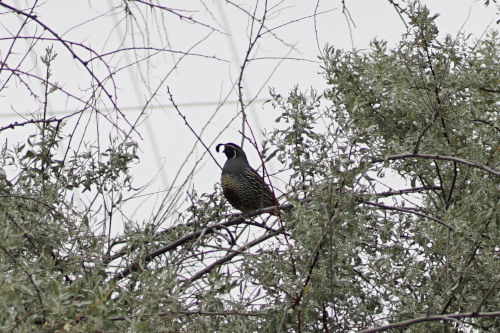

i went looking for baby animals with finley today! on the way to meet up with him downtown i found a hawk chilling at eye level. a man also stopped to look at him and said to me that they're getting brave in the last year.
 we walked pretty far down the creek. made it a few miles away! i found some offline depression posting under a brige
 there were huge flowering plants out there as tall as me!
my friend (a quail) was up in a tree screaming. so cute!!
everyone has been posting their own dolls today in the doll thread on /jp/! i love seeing everyone's girls! Here's the photo i took for the thread this morning of the dolls i have with me currently:

i think i've posted the only boy doll so far in the thread...

i've had liam shoved in the box for lieselotte since i brought him back. i'm really not sure where ill put him when she gets here. he definitely doesnt fit in her box though...
i started thinking about the migidoll miho head i have. i'm not particularly attached to him because i never got him a body. i bought him thinking he was close enough to ryu and in the end i just bought a ryu!
i don't need to sell him or anything and i wasnt actually planning on it but, i realized theres no way i could prove his legitimacy. i got him in 2009 off a DoA seller, so the likelihood of him being fake is pretty miniscule. i still couldnt prove it if i did want to sell him. i'm pretty sure i bought him from fayth

he's got a nice faceup (by meeve, 2008). i'm almost tempted to find him an NS SD13 body or something. idk if i need more SD boys though but sucks for him to be living without a body for over 10 years. ill keep my eyes out for a good deal i guess. cant say i feel rushed though.
now that i've read the dA post's comments i feel pretty guilty though...